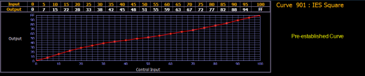
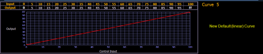

When you have opened the curves display (see About Curves ), you can select a curve or create a new curve by pressing:
If the curve is already stored, the contents are displayed in the CIA. If this is a new curve, a linear curve is displayed.

